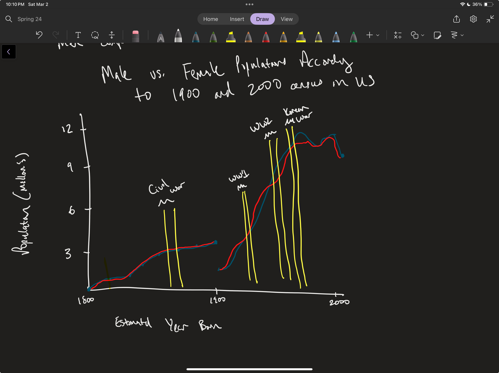
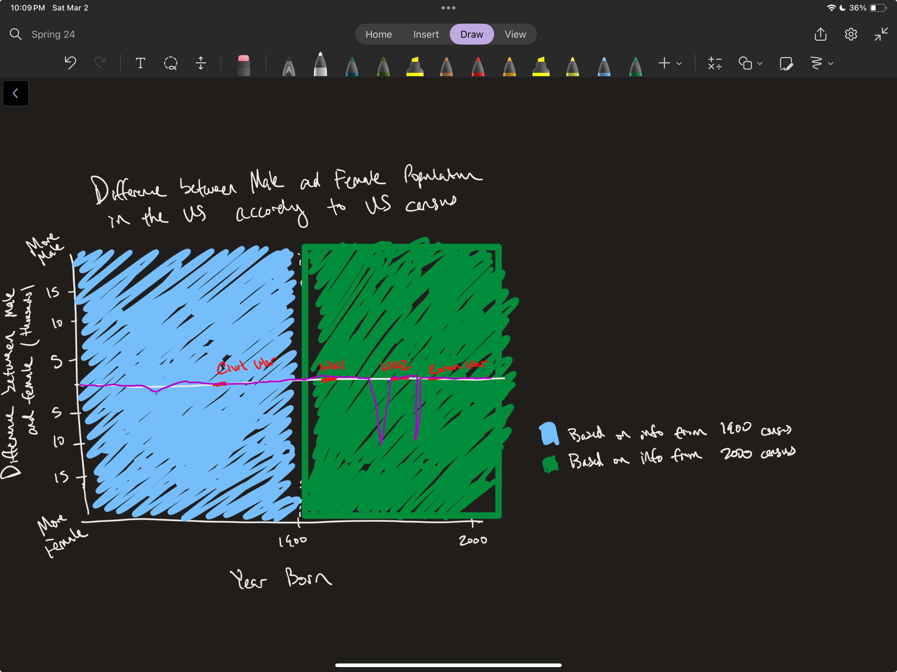
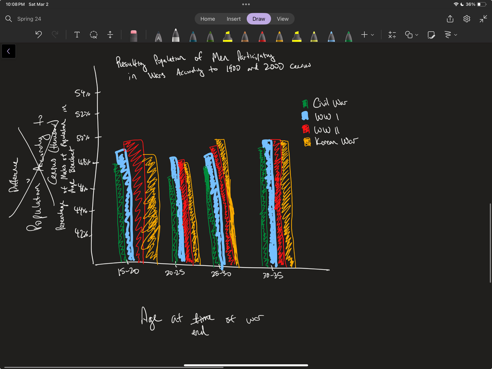
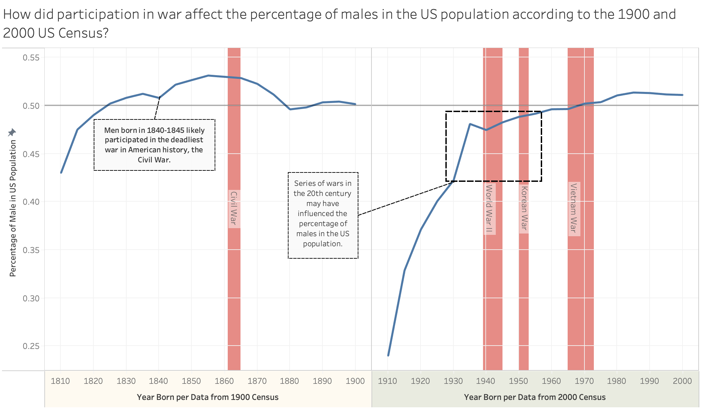

Assignment 2 Visualization Design
Jackie Chen (jackiech@mit.edu)
Part 1
Question: How has wars with significant death tolls of Americans affected the demographics of the US population?
Sketching Visualizations
Sketch 1:
- First, I would like to state that this is not the optimal data to explore how war has affected the male vs female population (something like population per year would be better), but I am interested to explore how I should represent information when the data is imperfect.
- For my first sketch, I wanted to put on paper the first thing that comes to mind, which is a population vs year born chart and plot two lines for each sex to show a comparison of the population for each group. I used blue for male and red for female as these are the colors typically associated with these sex. I also want to indicate when a war, which the US participated in, occurred by highlighting the zone. Note that I selected wars that had significant American casualities within a short span of time (i.e. Civil War, WW1, WW2, Korean War). The goal is to clearly show if there are any differences between the population of men and women due to wars.
- At an glance, it looks like my chart is conveying the population for men and women in the US from 1800 to 2000, which is not my intention. It is not clear that the data is from the census data from 1900 and 2000 and that we extrapolated year born from the age brackets of the census data. I do like how this chart would directly compare differences in population between women and men, but a potential issue is that the lines would overlap a lot or the difference between population is too small to see, thus this information would not be expressed well on this chart. The highlighting and labeling of the zones when war occurred also looks sloppy and the heights of the zones may inadvertently convey something, but it is not intended to mean anything. If I were to highlight the zones for when a war occurred, I would highlight the entire column.

Sketch 2:
- For my second sketch, I wanted to directly compare the differences between the male and female population and indicate that the data was extrapolated from the census data as the first sketch did not clearly accomplish either of these goals. There is a center line going horizontally indicating where the difference is 0. If the male population is larger, the data point would go above the center line and if the female population is larger, the data point would go below the center line. This center line is also a good region to show wars that US has participated in. Because the data is being collected at two significantly different times, I also wanted to indicate which census the estimate of people being born is being extrapolated. I can color code the background to indicate the separation of the datasets.
- I like how the audience would need to do less mental work to understand the differences in population compared to sketch 1. Whereas in sketch 1, the audience would have to mental compare the two lines to compute the differences in male and female popluation, the audience would only need to see if the line to below and above the horizontal line to understand whether the male or female population is larger and use the distance from the middle line to understand the magnitude of the difference. Additionally, but it is not great for comparing across years because the total population for each age bracket are not the same as the total population for older age brackets tend to be less. Maybe a percentage of the total population would be a better measure given this dataset. We also have to acknowledge that there may be other factors that may affect the difference in male and female population. Another feature I noticed about this graph was that I struggled with picking the colors for this graph. I opted for colors that were highly contrasting to each other so that it is easier to read, but it does make the graph more of an eyesore to look at. Maybe it would be sufficient to add a footnote regarding the origins for the data. I do like how the wars are marked on the center line so that you can see the differences between male and female population for the years prior.

Sketch 3:
- For my third sketch, I wanted to directly show how different wars affected the population of men. To do this, I would show the percentage of men in the population for the age groups that would have participated in the wars. Specifically, I identified the age in the census for which men were age 20-35 at the end of the war and assume that these subsets were the most likely to participate in the wars. This approach also compares the wars and each may have influenced the ratio of male to female population. On the y-axis, percentage of men of the total population for that age bracket is chosen because in the census data, the population decrease as people age would hopefully not be captured; however, the longer life expectancy of women compared to men may be observed here.
- Considering the original goal of showing how war in general affects the male population, I do not think that this approach best answers the question compared to sketch 1 and sketch 2. This chart would be better for comparing how each war affect the male population as it excludes information about population that likely did not participate in the wars. However, seeing how the percentage of men is changes, comparing a control to the impact of war, would show how war impacted the male population in a more drastic way. Additionally, there may be some overlap of wars affecting an age group as one person may have participated in multiple wars. When picking the color for each of the wars, I struggled because there is not a motif or encoding to associate with a specific war so my selection seemed arbitrary. The main takeaway for this sketch is that I think using percentage of male of the total population would be effective.

Takeaways from the sketches:
There were strengths and weaknesses to each of the 3 sketches, and the design process helped me decide what I would like to explore in phase 2. In sketch 1, the huge flaw of visual was that it did not clearly communicate how the male population was affected by war because it was not clear that the data was from two censuses a century apart, but it helped me brainstorm ideas for future sketches and I was intrigued with how to annotate a war that happened. In sketch 2, I focused on minimizing the effort from the audience to understand how the male population changed, but was not particularly happy with the dimension chosen on the y-axis and the way the different censuses were indicated. In sketch 3, I found the use of percentage of males of the total population to be a better measure given the question and dataset, but it lacked the impact as it did not show the differences between the populations impacted and not impacted by war. For part 2, I plan to combine the positive parts from each of the sketches. I want to also explore the capabilities of Tableau that would help label certain information in a clean way that did not look clean in the sketches, such as the names of the wars and which census the data am from. I am also curious to learn more about how the data actually look because the sketches were not accurate to the data.
Part 2
Question: How has wars with significant death tolls of Americans affected the demographics of the US population?

Phase 1 of this design process has helped me think critically about how I want to visualize my data to best convey the answer to my question and influenced many of my design choices. It helped me think critically about which dimensions I would want for the axises. From the three sketches, I realized that a percentage of male of the total population in the age bracket made most sense. It is easier for the reader to interpret, compare to sketch 1 where the reader would have to compare two lines and remember what each line represents, and more accurate, as learned in sketch 2 that the population size decreases in older age brackets. The horizontal reference line is also helpful, as learned from sketch 3, because we would expect the gender ratio to be 50-50 for male and female. The x-axis shows the years a population was born, extrapolated from the age groups in the census. This dimension was selected the audience can see when a war occurred and . The title poses the question that the visual hopes to answer. For denoting when wars have occurred, I took the approach from sketch 1 and improved it by highlighting the entire row. I also used the color red because it is associated with the bloodiness of conflict. Wars with significant casualities were included (note that I accidentally left out Vietnam War in the sketches), but World War I was excluded because it occurred in 1910 and the effect of that war would not be captured with this dataset. I labeled the highlighted region with the name of the war vertically, which looks more clean compared to how sketch 1 labeled the zone. I annotated certain datapoints that may answer the question presented in the title to draw attention to these areas and to add my own thoughts. I purposely kept the entire dataset and range of years to show that the data was derived from two separate data collections (1900 and 2000 census) and indicate to the audience that they should be skeptical about the correlation between war and ratio between men and women for the older population when the census was captured because women have longer life expectancy. I took inspiration from sketch 2 to denote the two different censuses but did not color the entire grid as that did not look as clean (as seen in sketch 2) and may draw attention away from the lines of the data.
Something I would do differently next time is to do some exploratory data analysis in addition to the sketches to understand which parts of the data that I may want to highlight. For example, I would not have known about wanting to highlight the percentage of males decreased for year 1840 had I not did some plots of the data. After seeing the data sketched out on Tableau, I had a clearer idea was datapoints that I would want to highlight and annotate. Specifically, Doing some exploratory data analysis would help me trust see some general patterns that may influence the effectiveness of the data in answering a question. For example, I was not aware of the degree to which life expectancy may have affected the male to female ratio for later ages, and this would be a confounding factor. The sketches were helpful in giving direction on how I want to approach part 2. I took the aspects that I liked from sketch 1 (marking the zones when a significant war occurred), sketch 2 (centerline denoting the expected value against the actual), and sketch 3 (using percentage of males of total population). Playing around in Tableau with a vision in mind helped me focus on creating an initial draft and add some final details to help complete the story, such as the annotations and how to label the wars.